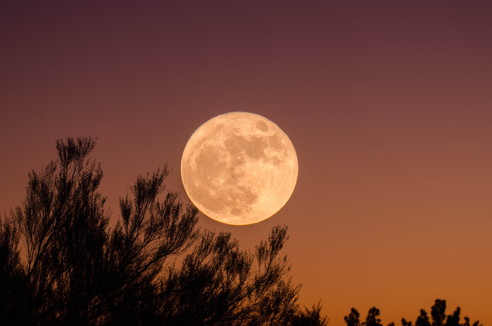

Características de la Luna:
Este satélite natural y único del planeta tierra se caracteriza por:
Poseer una masa de 7.35 x 1022 kilogramos.
Su volumen es de unos 2.2 x 1010 kilómetros cúbicos.
Posee una densidad de 3.34 g/cm3.
Su diámetro es de 3.476 kilómetros, que representa una cuarta parte del diámetro terrestre.
Las temperaturas sobre la superficie lunar oscilan entre los -233 y los 123 grados centígrados, dependiendo de su exposición al Sol.
La estructura de la Luna es sólida, rocosa y presenta cráteres en su superficie, causados por el choque de meteoritos ocurridos hace millones de años.
Prácticamente no posee atmósfera, y es por ello que no tiene protección natural contra meteoritos y asteroides.
Los cráteres formados en ella han permanecido intactos, pues no existen fuerzas como el viento y las lluvias para modificar su estructura.
La única actividad atmosférica son pequeños vientos que provocan tormentas de polvo, producto de los impactos.